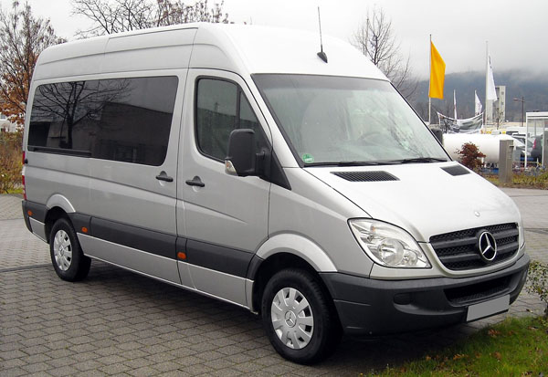

Котка
1200 руб.
Котка (фин. Kotka) — город на юге Финляндии, на берегу Финского залива. Название города в переводе означает «орёл». Котка была основана в 1879 году, однако ранее на том же месте был российский город-крепость Роченсальм (фин. Ruotsinsalmi).
Котка – это старейший, с богатой историей, по-фински уютный морской город, расположенный совсем недалеко от российской границы. В переводе с финского «котка» означает орел. Такое название город получил благодаря тому, что над морскими просторами здесь летают орланы.
Сегодня Котка – это город парков. Именно так позиционируют свой город местные жители. Деятельность по озеленению города направлена на то, чтобы превратить Котку в уникальный финский город-парк, утопающий в зелени. Этому, безусловно, способствуют местные природные условия: равнины в северной части, река Кюмийоки, множество островков и великолепный морской пейзаж. А недавно в Котке появился Национальный городской парк площадью 2 400 га, который включает в себя морскую акваторию восточной части Финского залива с архипелагом, парки и застроенные кварталы центральной части города, а также берега реки Кюмийоки вплоть до порогов Коркеакоски и Сиикакоски.
Стоимость тура - 1200 руб.
Хельсинки
1400 руб.
Хе́льсинки (ранее Гельсингфорс, фин. Helsinki, швед. Helsingfors) — столица и крупнейший город Финляндии, административный центр провинции Уусимаа. Расположен на юге страны, на берегу Финского залива Балтийского моря.
Хельсинки вместе с городами-спутниками Вантаа, Эспоо и Кауниайнен образует столичный регион с населением более миллиона человек. Историческое ядро города раскинулось по низменному полуострову Виронниеми (Estnas, Vironniemi, также называется и весь центральный район) между Сенатской площадью (Senaatintori) и улицей Эспланада (Esplanadi) на юге и Новым портом на северо-востоке, образуя Южный округ (Etelainen suurpiiri), где и расположено большинство самых интересных мест.
Хельсинки является центром бизнеса, образования, культуры и науки в Финляндии. Главным международным авиаузлом в Финляндии является Аэропорт Хельсинки-Вантаа, расположенный в 20 километрах от центра столицы и осуществляющий прямые перелёты по всему миру. Путь от Хельсинки до Таллина занимает 1,5 часа по морю и 18 минут на вертолёте. В два других крупных города, Тампере и Турку, можно попасть за 1,5—2 часа на поезде и 1,5—2,5 часа на машине.
Несмотря на свое южное расположение и часто весьма непредсказуемую погоду, вокруг столицы Финляндии можно обнаружить множество первоклассных центров зимнего отдыха.
Стоимость тура - 1400 руб.
Лаппеэнранта
1100 руб.
Ла́ппеэнранта (фин. Lappeenranta), или Вильманстранд (швед. Villmanstrand) — город и муниципалитет в Восточной Финляндии, административный, экономический и культурный центр провинции Южная Карелия. Лаппеенранта расположена в живописном туристическом регионе, на берегу озера Сайма, поблизости от других популярных городов, таких как Иматра, Коувола и Савонлинна.Это небольшой, но оживленный финский город, который находится всего в трех часах езды от Санкт-Петербурга. Город является тринадцатым по величине в Финляндии. На сегодняшний день население Лаппеенранты составляет 73 000 человек, из которых 15 000 – студенты, поэтому в городе всегда кипит жизнь.
Лаппеэнранта любима и посещаема российскими туристами даже больше, чем столица Хельсинки. Во-первых, Лаппеенранта ближе: расстояние от МАПП Брусничное всего 25 километров, от пропускного пункта Торфяновка – 60 км. Более всего здесь востребованы возможности шоппинга и однодневных туров с посещением магазинов или аквапарка с отправлением ранним утром и возвращением вечером.
Пользуется популярностью и аэропорт Лаппеенранты с дешевыми авиабилетами в Милан, Дюссельдорф, Барселону.
Стоимость тура - 1100 руб.
| Трансфер в Хамину | 1200 руб. |
| Трансфер в Котку | 1200 руб. |
| Трансфер в Лаппеэнранту | 1100 руб. |
| Трансфер в Иматру | 1200 руб. |
| Трансфер в Хельсинки | 1400 руб. |
| Трансфер в Ловиису, Порвоо | 1400 руб. |
| Трансфер в Эспоо | 1600 руб. |
| Трансфер в Тампере | 2000 руб. |
| Трансфер в Лахти | 1600 руб. |
| Трансфер в Сало, Хамеенлинну | 1800 - 2000 руб. |
| Трансфер в Турку | 2000 руб. |
Стоимость указана за 1 посадочное место в одну сторону на одну поездку.
Трансфер в Финляндию на такси (маршрутке) от адреса до адреса – это комфортный и недорогой способ быстро добраться из Санкт-Петербурга в Финляндию или обратно. Ежедневно осуществляются утренние и вечерние рейсы в Хельсинки из Санкт-Петербурга утром и вечером, для групп организуются поездки в удобное для заказчика время.
В нашей компании Вы можете заказать индивидуальный тур в любой город Финляндии. Совместно с Вами мы запланируем маршрут Вашей поездки, согласуем время выезда из Петербурга и время возвращения, вид транспорта.
В назначенное время водитель заберет Вас с Вашего адреса (адресов) на 8-местном микроавтобусе или легковом автомобиле, на обратном пути он доставит Вас до Вашего адреса (адресов). Точная стоимость и условия поездки согласовываются при заказе.
Для услуги «такси в Финляндию» предоставляются комфортабельные 8-местные микроавтобусы марки Мерседес-Бенц Спринтер на 8 посадочных мест. Предусмотрена зарядка для техники. Наши микроавтобусы имеют вместительное багажное отделение. Для детей в машине устанавливаются детские кресла в соответствии с возрастом.
